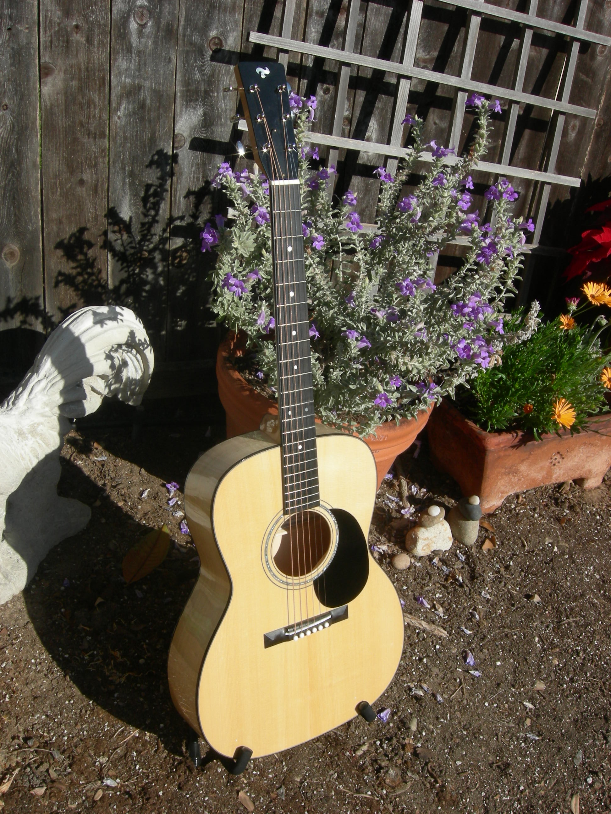
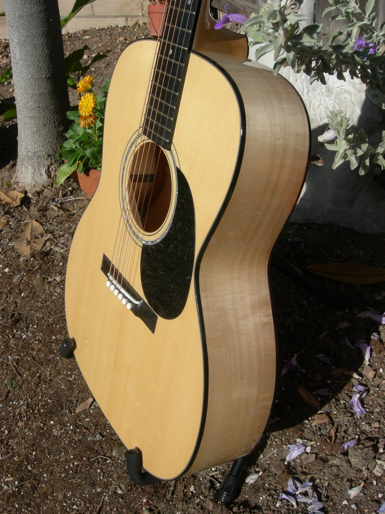
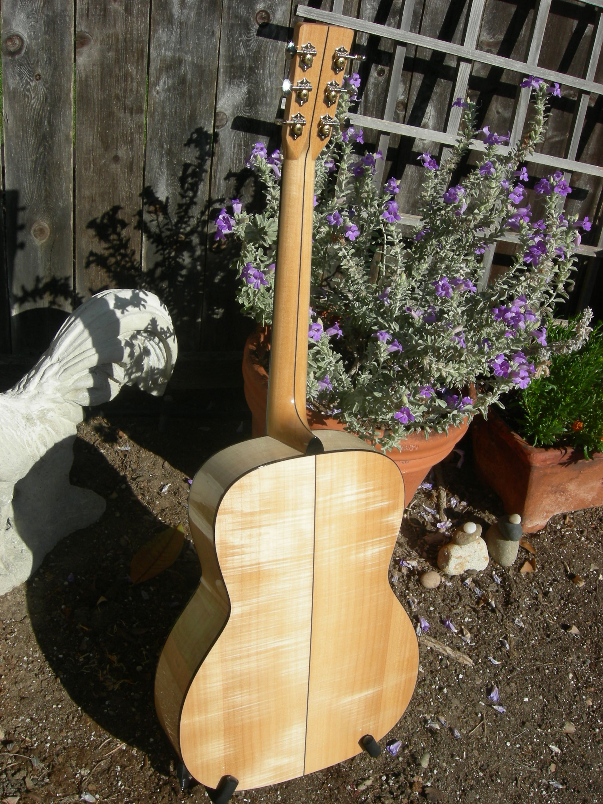
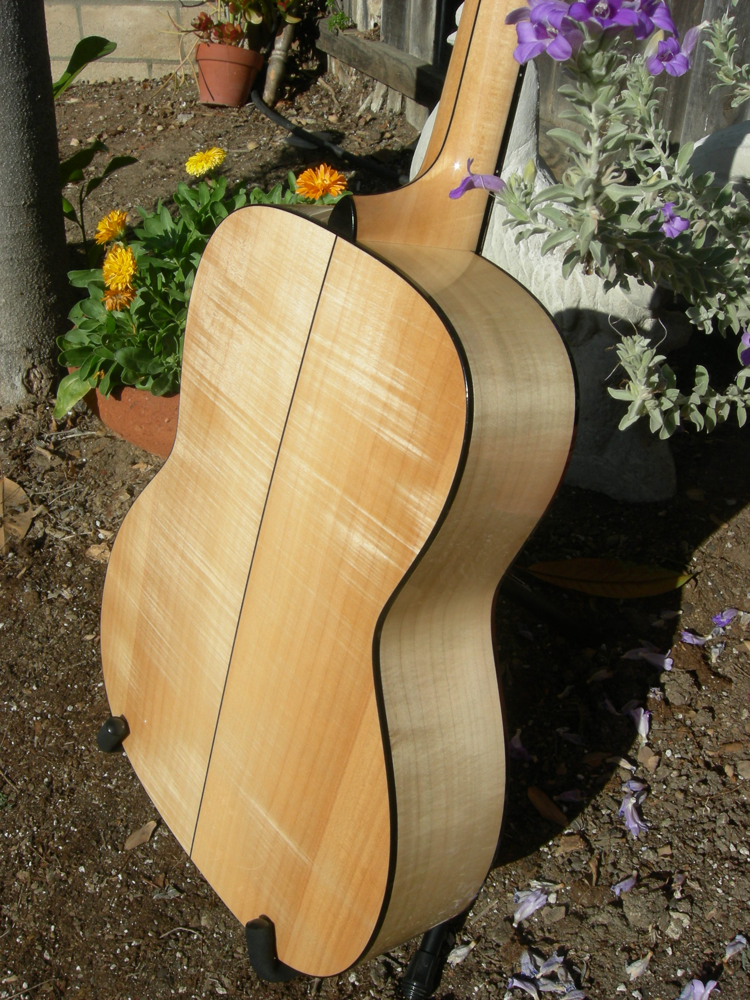
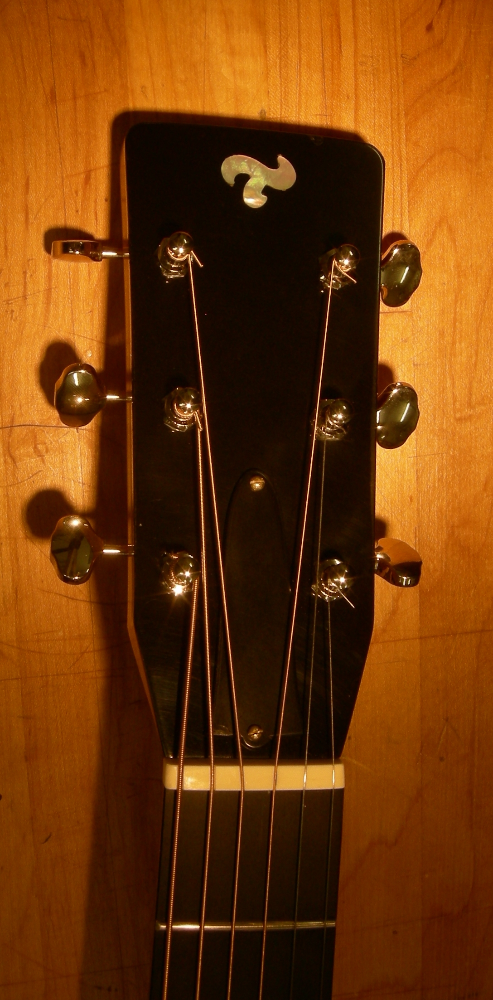
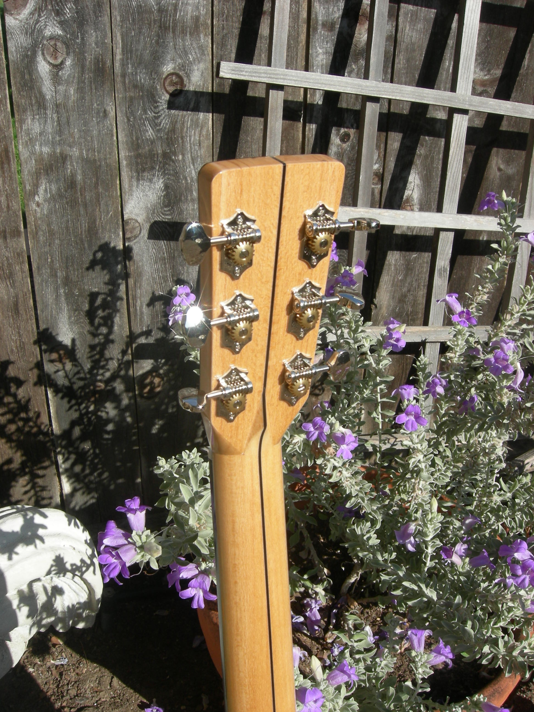
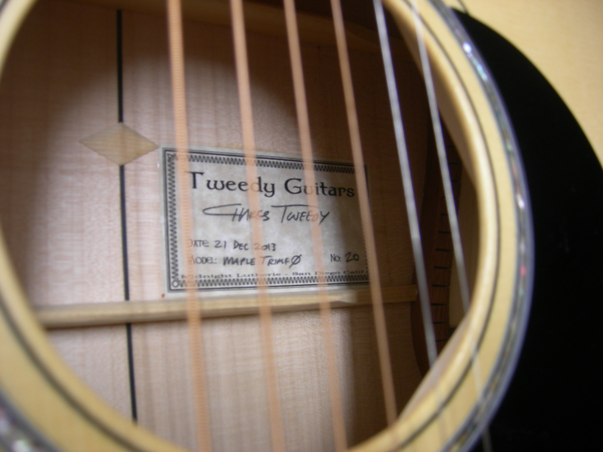
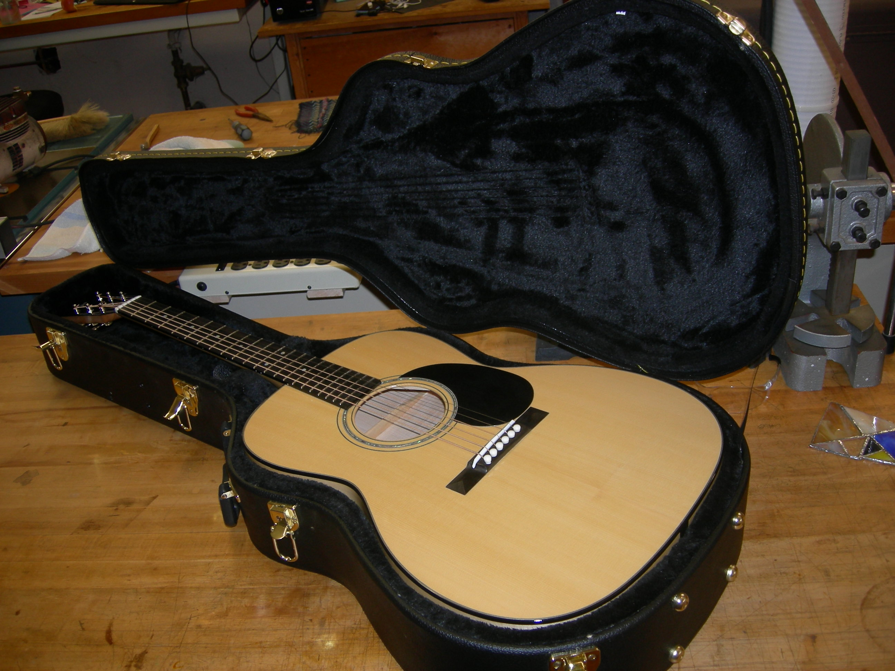

OM Maple / Fir
This guitar now lives at the amazing Santa Barbara Guitar Bar.
 Top: Sub-Alpine Fir
Top: Sub-Alpine Fir- Back/Sides: Silver Maple
- FB: Ebony
- Bridge: Ebony
- Neck: Linden
- Binding: Ebony
There's one thing that everyone who's witnessed this guitar says: "Wow! This thing is LOUD!!"
The top is an unusual species: sub-alpine fir and it works great. Can't argue with success.
Price: SEE SB Guitar Bar -or- EMAIL me to inquire about details.

OM size and scale on an instrument that follows a strict black-and-white theme.

Ebony bridge with a long saddle and white pegs. The maple of the sides
is subtly figured, showing shimmers of fire in every highlight.

The thematic black line flows all the way up the guitar from the tail,
through the heel, past the point of the diamon headstock joint,
and over the top of the headstock.

The back's dramatic figure.

Simple, classy black headstock.

Grover open-back tuners atop the diamond volute.

The new Tweedy Guitars label. Freshly minted.

The guitar comes with a TKL black hardshell case.